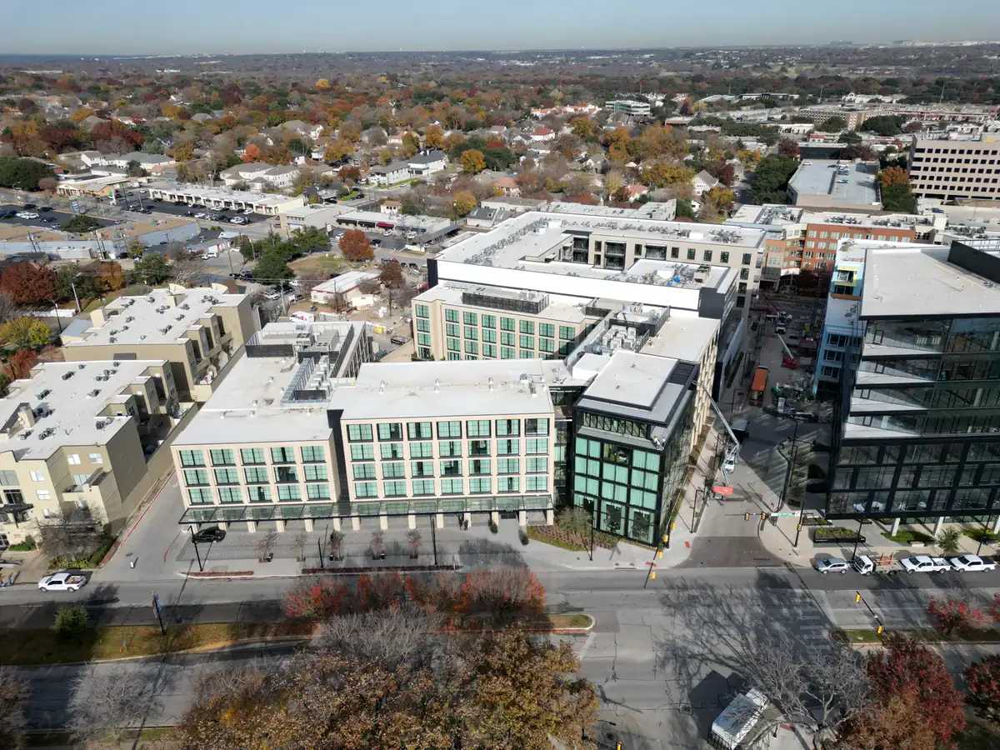
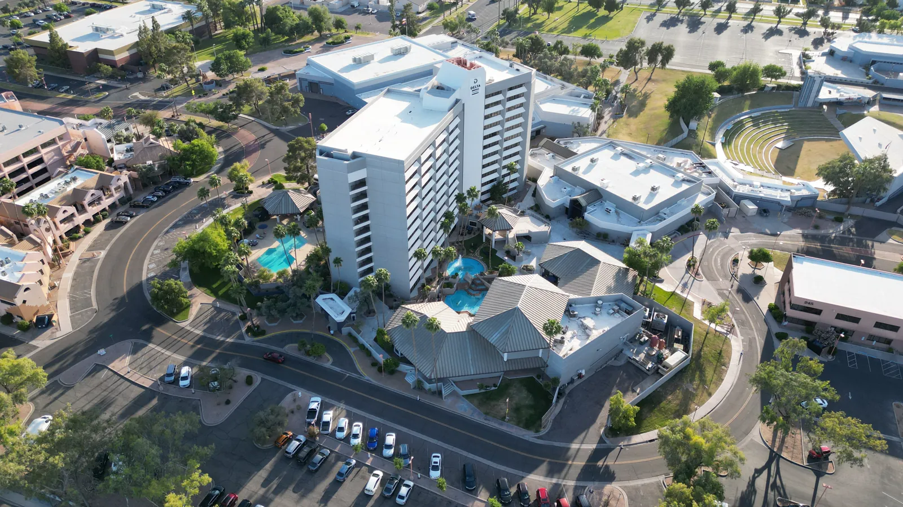
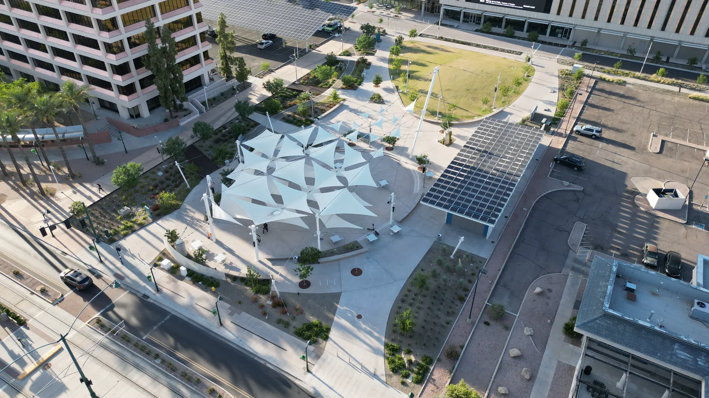

Property and lot
Exterior condition, lot boundaries as visually apparent, driveway, yard, roof context and key improvements.
For DFW agents, builders and property marketers
APS Drone creates MLS-ready aerial photography and short vertical video that show the property, lot, access, neighborhood context and nearby amenities. Packages start at $249 across Dallas-Fort Worth.
Dallas real estate drone photography starts at $249 for 10 edited aerial photos, MLS-size and full-resolution files, listing usage and typical 24–48 hour delivery. Photos plus a 20–40 second vertical reel start at $499.
Exterior condition, lot boundaries as visually apparent, driveway, yard, roof context and key improvements.
Street access, surrounding neighborhood, nearby amenities and proximity that helps buyers understand the setting.
A useful mix of wide establishing views, closer hero angles and vertical framing for social promotion when scoped.



Share the address or city, listing type, target date and must-have views.
Airspace, weather, access and site conditions are checked before confirmation.
An FAA Part 107 pilot follows the agreed property-marketing shot list.
Receive organized edited files, typically within 24–48 hours for standard packages.
Use the free DFW real estate drone shot list, see a combined listing photo and vertical reel case study, or watch the dedicated 9:16 property reel. None of these pages publishes a customer name or exact address.
Service details last reviewed: August 30, 2026.
Ten edited aerial listing photos start at $249. Photos plus a vertical reel start at $499.
Yes. The starter package includes MLS-size and full-resolution copies plus listing usage for the agreed property.
Yes. The capture plan is adjusted for residential listings, land, multifamily communities, luxury homes and new construction.
No provider can promise that before checking the location. Airspace, temporary flight restrictions, weather, access and site safety are reviewed first.